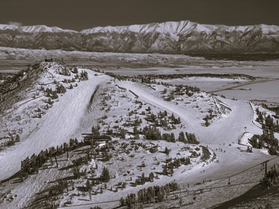
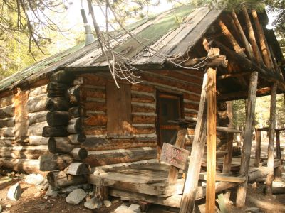
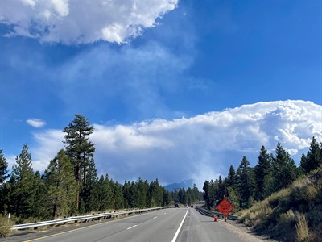
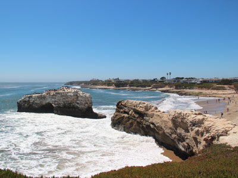
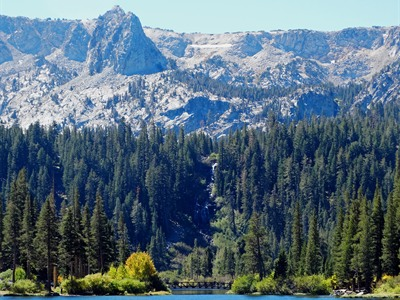
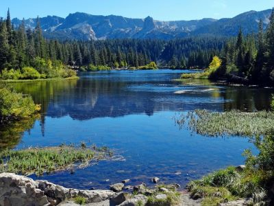
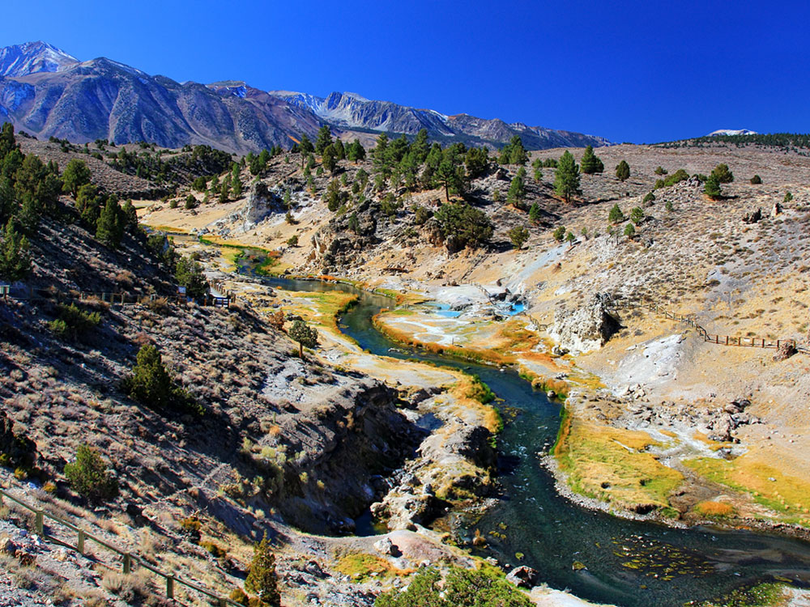
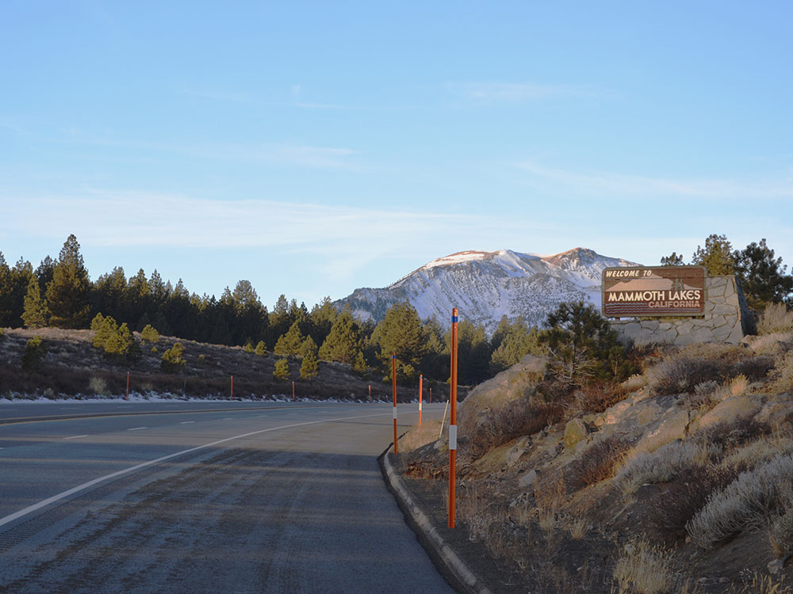
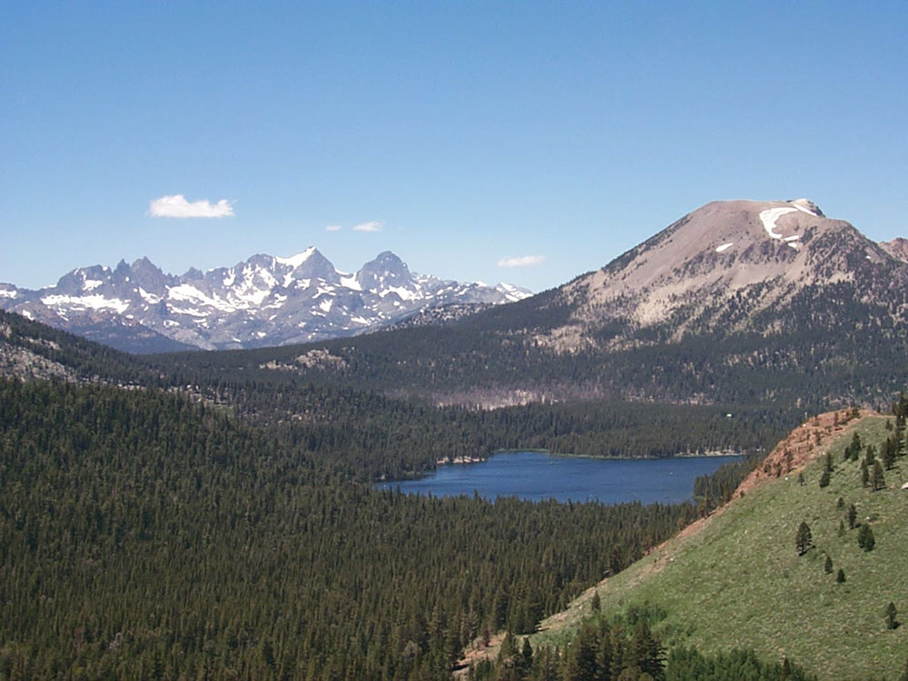
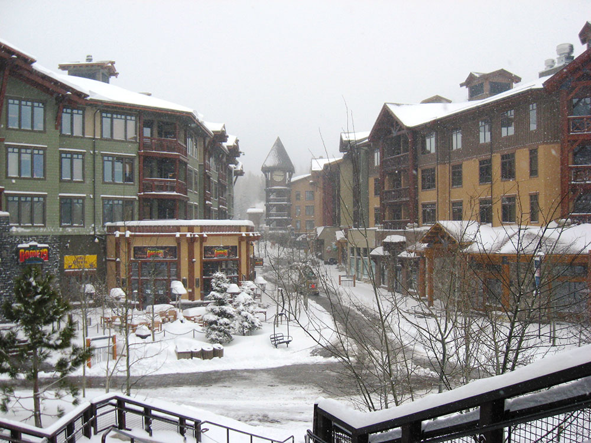

.jpg){kind=link}
Town located immediately to the east of Mammoth Mountain, at an elevation of 7,880 feet, is known for its ski area, lakes, soda springs, and obsidian dome.
How to Get There
From Bishop (42 mi): Head north on N Main St toward E Line St. Keep left to continue on US-395 N/N Main St. Continue to follow US-395 N. Keep left to stay on US-395 N. Take the CA-203 exit toward Mammoth Lakes/Devils Postpile. Turn left onto CA-203 W. Turn right. Turn right.
Overview
Mammoth Lakes is a mountain resort town of about 7,000 people in Mono County, at an elevation of 7,880 feet on the eastern side of the Sierra Nevada, along U.S. 395. It lies at the foot of Mammoth Mountain (11,053 feet), one of the largest ski areas in California, and is surrounded by the Inyo National Forest and the Ansel Adams and John Muir Wilderness Areas.
Visitors come to Mammoth Lakes for skiing and snowboarding from November until May or June, and for hiking, mountain biking, fishing and camping in summer. It is also the base for visiting Yosemite's east entrance, Mono Lake, Devils Postpile National Monument and the hot springs and lakes of the Eastern Sierra.
History
Prospectors staked claims on Mineral Hill in 1877, and the Mammoth Mining Company organized in 1878, but the boom was short-lived. Ranching and later tourism took over, and Dave McCoy built the first rope tow on Mammoth Mountain in the 1940s and opened its first chairlifts in 1953, which grew into the modern ski area. Mammoth Lakes incorporated as a town in 1984 and grew into a four-season resort.
Sightseeing and Popular Landmarks
Mammoth Scenic Loop, Inyo Craters, Twin Lakes, Twin Falls and the Mammoth Consolidated Mine are among the sights close to town. Devils Postpile National Monument, Rainbow Falls, Hot Creek Geological Site and Convict Lake are within a short drive, and Panorama Dome and Heart Lake offer views.
Culture and Museums
Mammoth Lakes is more of an outdoor destination than a cultural one, but it hosts the Mammoth Lakes Jazz Jubilee in July, the Fourth of July parade and concerts at the Village. The old mining sites on Mineral Hill tell the area's history, and the town's galleries and restaurants add to the experience.
Parks
The town is surrounded by forest, with the Lakes Basin, the Bluffs and Mammoth Mountain Bike Park offering trails. Inyo National Forest campgrounds, the John Muir Trail and the Pacific Crest Trail are nearby, and the area's volcanic features, including Inyo Craters and Hot Creek, show its geologic history.
Seasons and Weather
Mammoth Lakes has a high-mountain climate, with heavy winter snow, averaging about 400 inches on the mountain, and cold temperatures, with highs in the 30s and 40s°F. Summers are warm and dry, with highs in the 70s and 80s and cool nights, and afternoon thunderstorms are common in July and August. Fall brings aspen color in late September and October.
This article uses material from Wikipedia as well as information from official tourism and institutional sources. Key references include Visit Mammoth, Town of Mammoth Lakes, Mammoth Mountain, Devils Postpile National Monument, and National Weather Service Reno. Wikipedia material is from the article "Mammoth Lakes, California", released under the Creative Commons Attribution-Share-Alike License 3.0.
Featured Locations and Trails

Thomson200, CC0, via Wikimedia Commons; Image Size Adjusted

Heart Lake
Short alpine trail leading to a heart-shaped lake surrounded by pine forest, granite ridges, and panoramic mountain views.
Inyo Craters
Volcanic craters formed by steam explosions over 600 years ago, featuring turquoise lakes and forested trails in a geologically active region.

Davide D'Amico from London, United Kingdom, CC BY-SA 2.0, via Wikimedia Commons; Image Size Adjusted
.jpg){kind=link}
Mammoth Consolidated Mine
Historic Depression-era mining camp preserved in a state of arrested decay, featuring bunkhouses, mining equipment, and interpretive signage along a forested trail.

Rhododendrites, CC BY-SA 4.0, via Wikimedia Commons; Image Size Adjusted
.jpg){kind=link}
Mammoth Scenic Loop
Paved forest road connecting Mammoth Lakes to US-395, offering access to trailheads, volcanic features, and scenic cycling routes.

Panorama Dome
Short forested trail leading to a treeless summit with panoramic views of the Mammoth Lakes Basin, Long Valley Caldera, and surrounding Sierra peaks.
The Bluffs
Residential overlook and scenic viewpoint offering sweeping vistas of the Mammoth Lakes Basin, Sherwin Range, and Long Valley Caldera.

Thomson200, CC0, via Wikimedia Commons; Image Size Adjusted
The Bluffs
Residential overlook and scenic viewpoint offering sweeping vistas of the Mammoth Lakes Basin, Sherwin Range, and Long Valley Caldera.

Grey3k, CC BY 3.0, via Wikimedia Commons; Image Size Adjusted
Twin Falls
Scenic double waterfall cascading from Lake Mamie into Twin Lakes, accessible via a short forested trail and overlook.

Grey3k, CC BY 3.0, via Wikimedia Commons; Image Size Adjusted
Twin Lakes
Glacier-carved alpine lake with two connected basins offering fishing, boating, camping, and access to scenic trails in the Mammoth Lakes Basin.



_03.JPG){kind=link}



_02.JPG){kind=link}